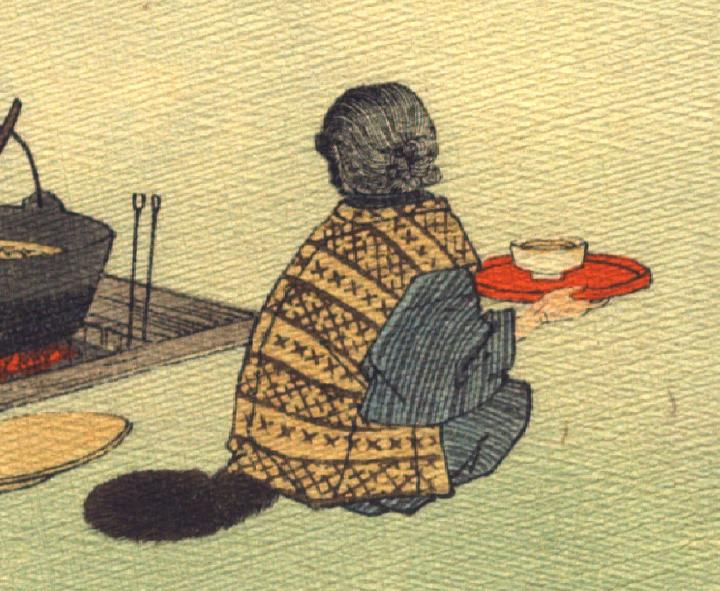

老婆に化けた狸。頭にかつららしきものをかぶり、着物にちゃんちゃんこ姿で座り、椀を載せた盆を両手にかかげている。尻から狸の尻尾が覗いている。
著作者：J.Dautremer／出典：親書誌：U426_nichibunken_0101：Le mont Katsi Katsi／日付：2006／資源識別子：U426_nichibunken_0101_0002_0000
Copyright (c)2010- International Research Center for Japanese Studies, Kyoto, Japan. All rights reserved.